Corporate

- HSBC at Global Fintech Fest, Mumbai
- [DATE TO CONFIRM]Datamatics Annual Achievers Awards, Mumbai
- Asian Paints “Reimagine Tomorrow” launch, Kolkata
- Qualys Security Conference
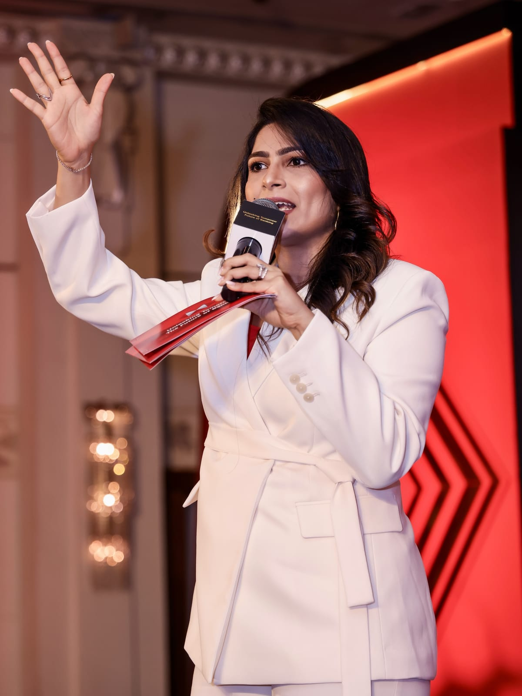
Presenter, anchor and emcee for corporate stages, entertainment and celebrity events, cultural evenings and virtual formats, in India and abroad.
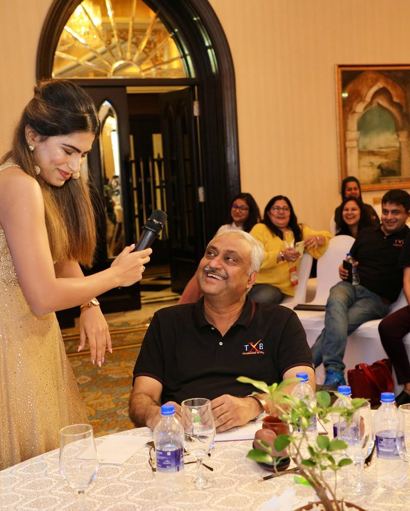

Kinds of event she hosts, each with dated examples from her record.

[AUDIO — AWAITING REVIEW] This clip plays muted until its sound is reviewed.


[AUDIO — AWAITING REVIEW] This clip plays muted until its sound is reviewed.
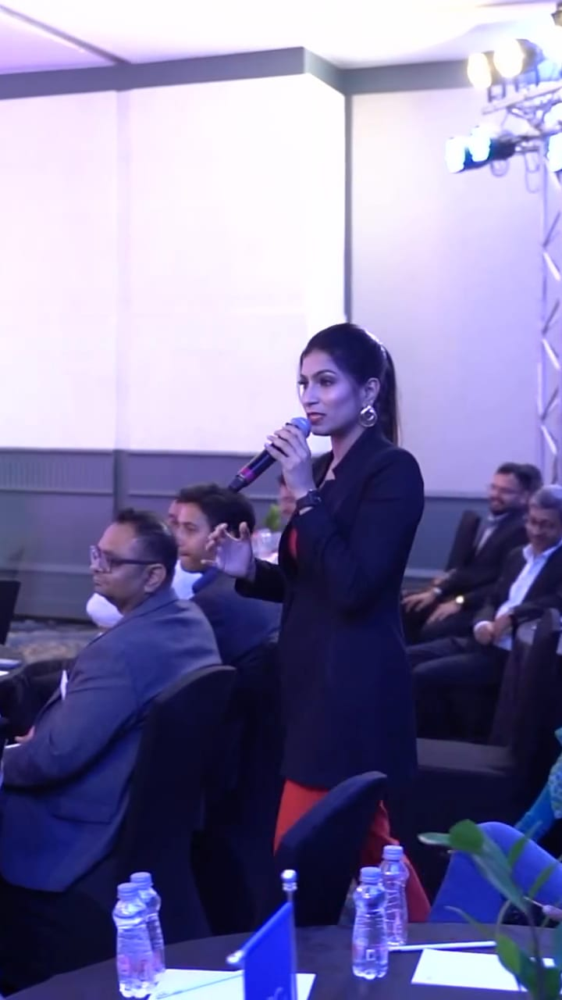
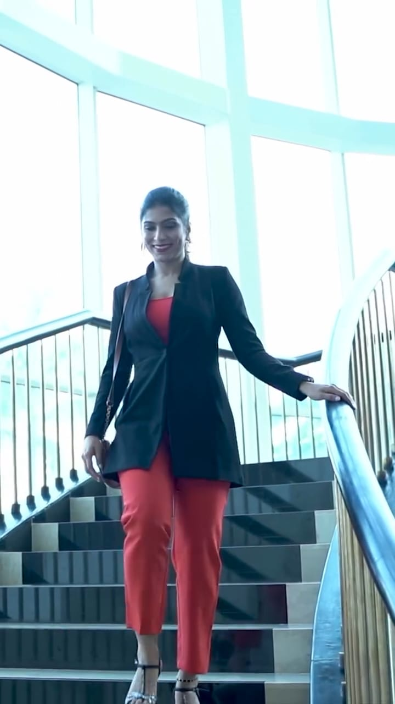
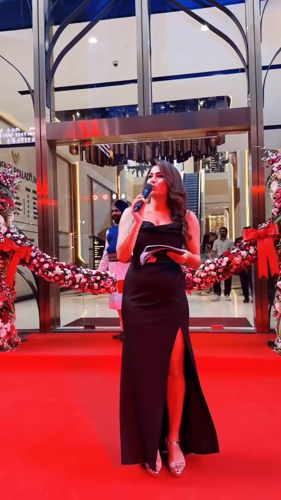
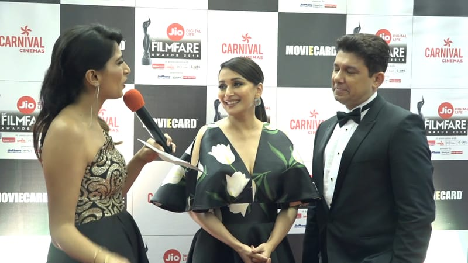
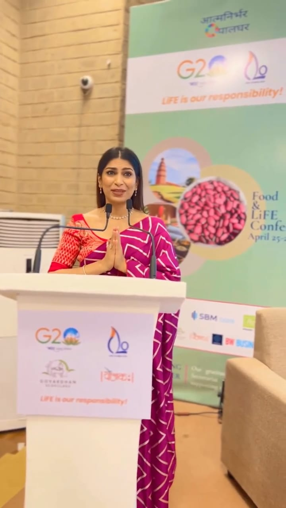
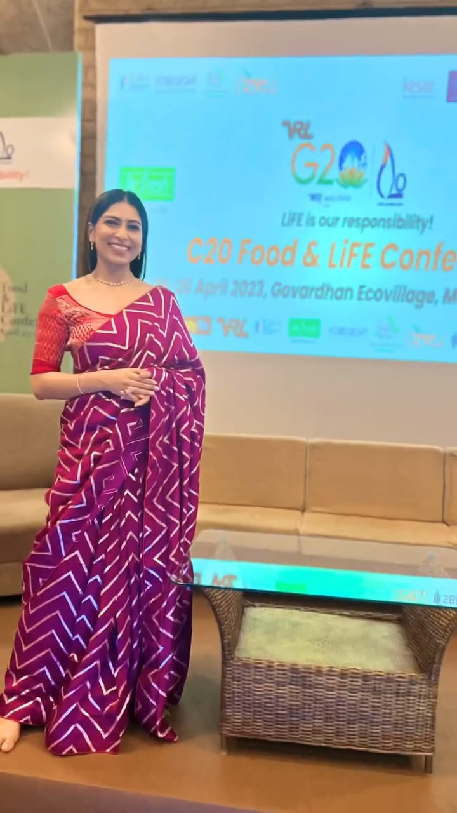
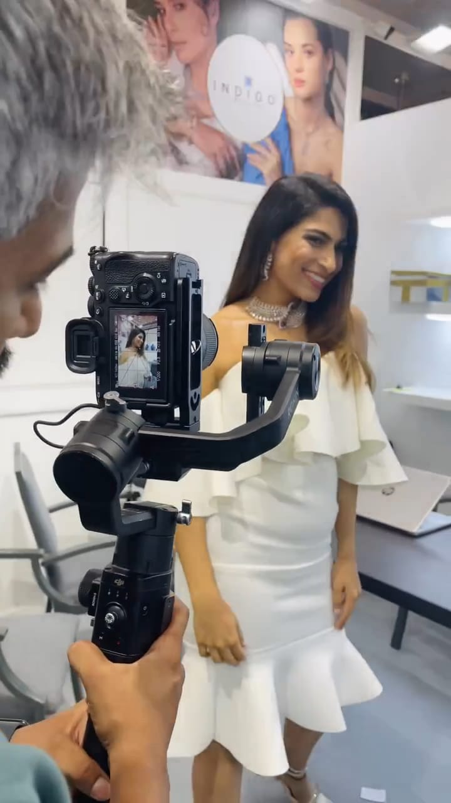
Clients who asked her back. Each line runs from the earliest dated engagement in her record to the latest.
–
Global Fintech Fest, 2023 and 2026; an induction programme, 2024; “Unlocking Tomorrow”, 2026
Mumbai and PuneConference & summit
–
March 2017; virtual awards, 2021; Awards Night, January 2024
Mumbai and virtualAwards & R&R
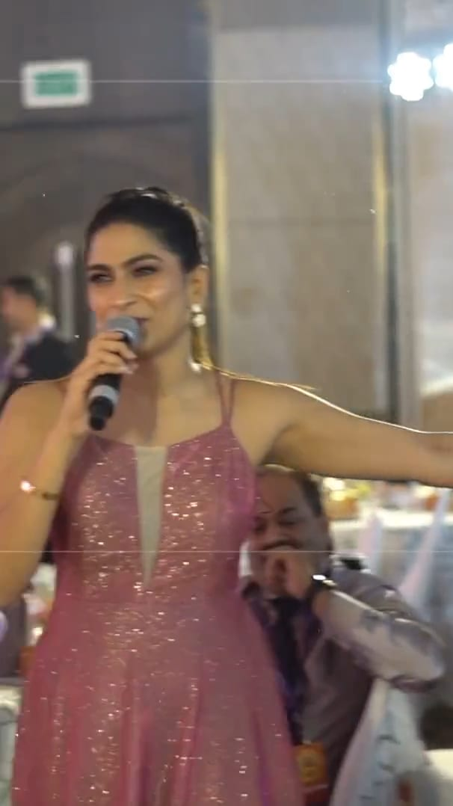
–
Gala night and the “Tales to Tell” sales conference, 2025; “Forge the Future”, 2026
Mumbai and GoaConference & summit
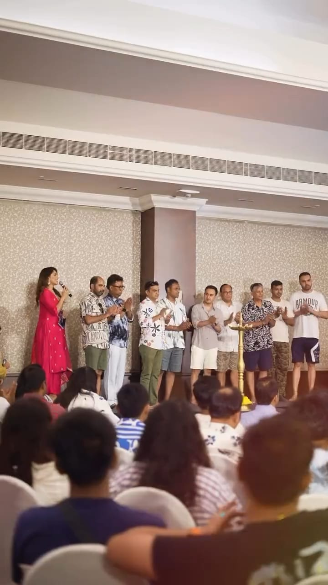
–
Official host in 2021, 2022 and 2025
Navi MumbaiPageant

–
Partner events, December 2025 and April 2026
Colombo, Sri LankaDealer & partner meet
Text onlySeoul
Ho Chi Minh City
Auckland and Queenstown
Colombo
Bali
Tbilisi
She prepares and scripts with the client before the day, and hosts from cue cards at the lectern or on the floor.
More on About →Formats, languages, bios, clips to forward and how to check a date, on one page.
For event managers →